如何與 Codex 協作、部署並驗證一個埋點規劃平台。
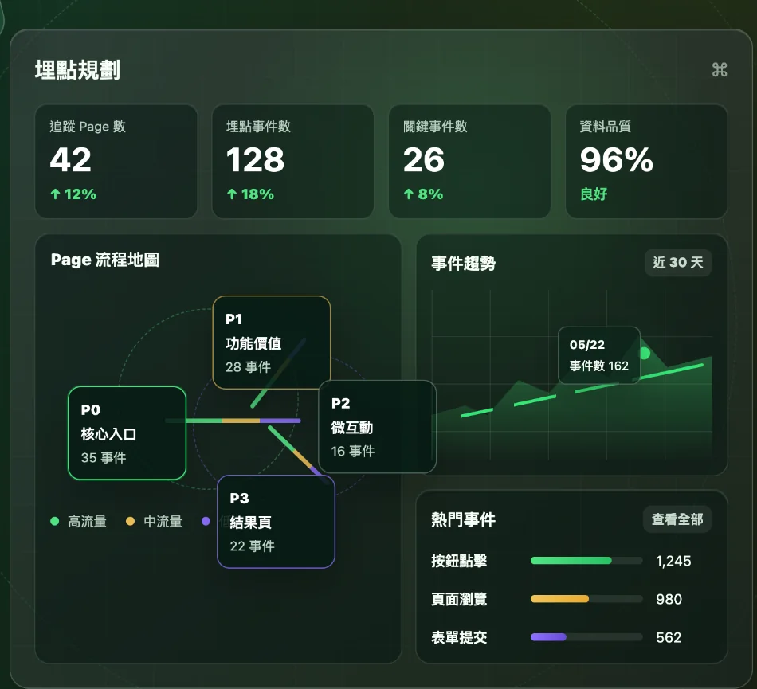
track("cta_click")從實際工作問題出發，經歷需求、開發、驗證與反思。
從好奇 AI 能做到什麼，到實際挑戰完整的產品開發流程。
不再只做重視視覺與互動的網站，而是挑戰有資料結構、欄位定義與實際工作流程的工具。
之前曾嘗試整合 AI 功能，卻沒有成功。這次想重新挑戰，了解問題出在哪裡。
教授分享設計師被要求現場使用 AI 做出產品，讓我開始思考設計師未來需要具備哪些能力。
問題不在於做不到，而是工作散落在不同工具。
先定義埋點事件、欄位與填寫規則。
將設計稿與分析範圍提供給 ChatGPT。
檢查 AI 分析是否正確，持續補充需求與修正。
將分析結果下載成 Excel 檔案。
合併不同批次的分析結果，整理成最終版本。
不是再做一個 ChatGPT，而是讓規劃工作更有系統性且能夠成為跨部門的溝通工具。
認知門檻高，需要懂得描述畫面、埋點條件和輸出格式，才容易得到可用結果。
在 ChatGPT 中迭代，對話越長越難回頭查找；不同 Page 和專案的結果不容易整理。
不同頁面產出的埋點資料，需要人工合併、檢查與修正，也不容易管理最新版本。
以專案、頁面與事件為核心，將 AI 分析、事件編輯與文件匯出整合在同一個平台。
每次分析都是獨立的對話任務
讓埋點規劃成為可持續管理的工作流程
不是一次就把產品做出來，而是透過需求定義、功能驗證與反覆修正，逐步完成開發。
透過 ChatGPT 釐清產品需求、使用流程與功能規格，建立開發依據。
利用 Codex 開發核心功能，實際操作並檢查流程是否符合預期。
取得 Figma 設計資料，讓 AI 分析畫面並產生埋點建議。
將程式碼推送至 GitHub，透過 Cloudflare 部署成可實際操作的網站。
測試功能完整性，處理授權、API 額度限制與操作過程中的異常狀況。
一開始把醫療專案的情境帶進需求，導致平台不夠通用。
實際測試電商專案時，發現埋點建議混入醫療相關事件。
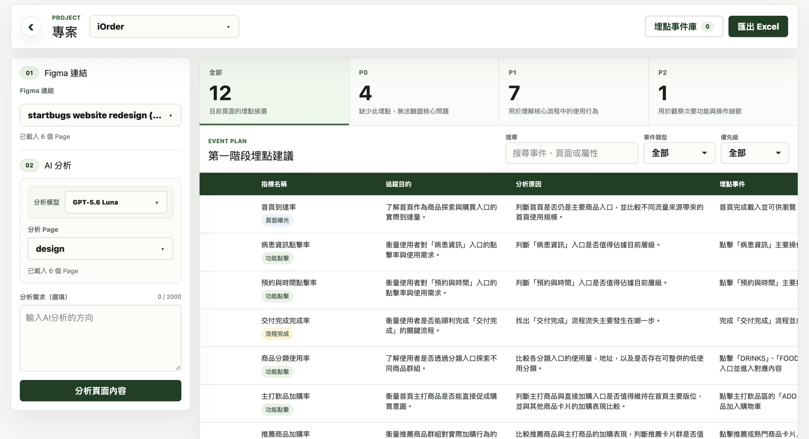
第一版網站看起來已經成形，但實際操作後，才發現許多功能仍停留在展示階段。
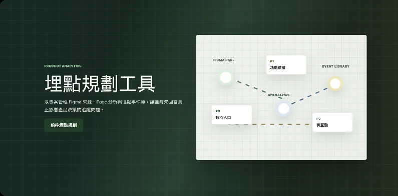
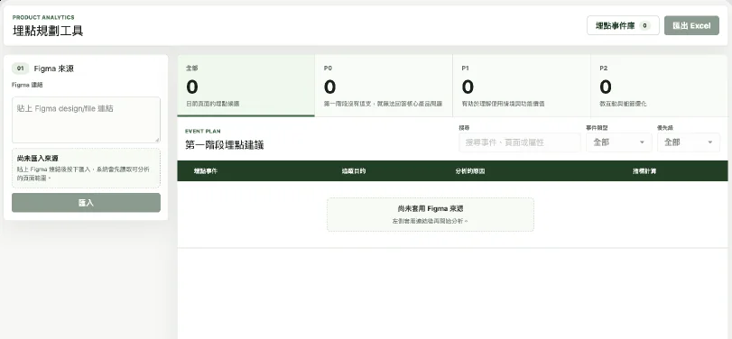
從假資料改成真實分析，才發現還需要處理 API 與存取權限。
需要在部署環境設定對應模型的 API Key。
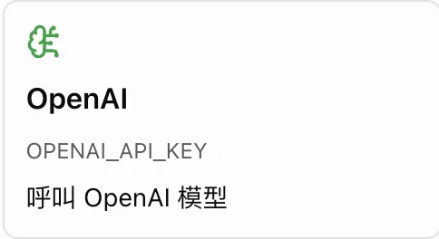
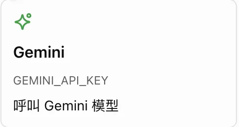
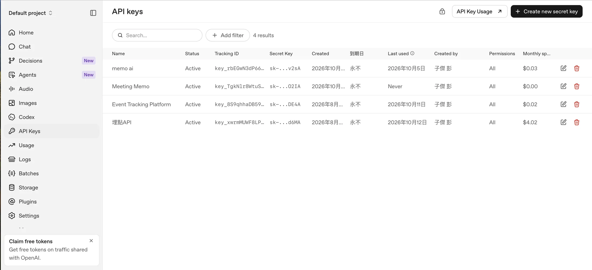
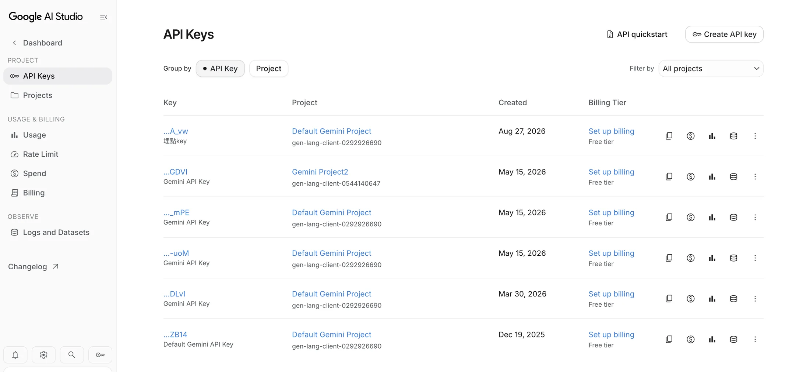
一開始平台使用我的個人 Token 讀取設計稿，但當工具要開放給其他人使用時，就必須重新思考授權方式。
所有人共用我的 Figma 存取權限
每位使用者授權自己的 Figma 帳號
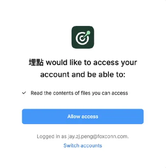
原本以為請 Codex 改成 OAuth 就能完成授權，實際操作才發現，還需要到 Figma Developers 完成一系列設定。
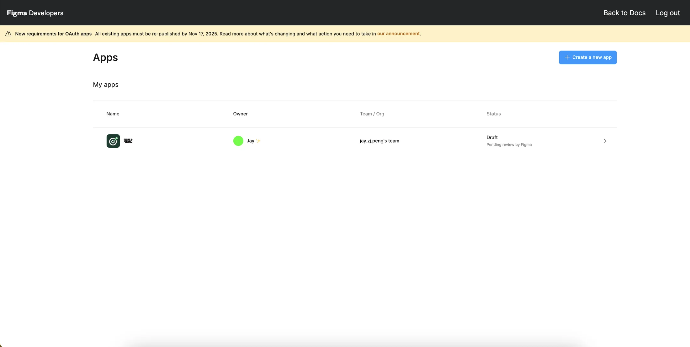
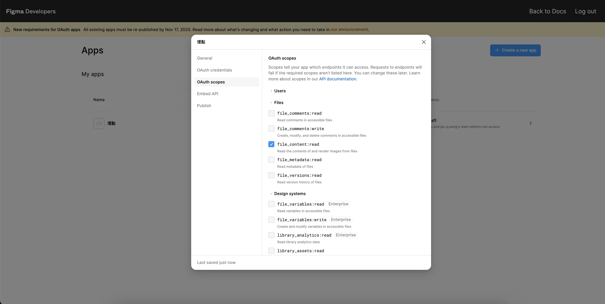
在 Figma Developers 建立應用程式，取得串接所需的應用程式資訊。
選擇平台需要的存取範圍（Scopes），避免要求不必要的權限。
設定 Redirect URI，讓使用者完成 Figma 授權後能返回平台。
依 Figma 的要求提供應用程式資訊，提交審核並等待結果。
雖然已經可以正常讀取設計稿，但不同使用者能呼叫 API 的次數，可能有很大的差異。
Viewer、Collab、Dev、Full 等不同席次，會影響 API 使用額度。
Starter、Professional、Organization、Enterprise 等方案，適用的額度可能不同。
讀取完整設計稿、圖片或檔案資訊，不同 API 的請求限制也不同。
我發現 ChatGPT 似乎較少遇到額度問題，但兩者實際使用的整合方式與限制不同。
files / nodesMCP 取得設計資料原本每次點擊「AI 分析」，都會重新向 Figma 取得設計資料，即使設計稿完全沒有改變，也會消耗 API 額度。
問題：同一份設計稿重複分析，會產生不必要的 API 請求。
改善：減少重複請求，把 API 額度留給真正需要更新的資料。
原本使用 ChatGPT Sites 測試網站，但我希望未來切換 Codex 帳號，也不會影響網站的使用與維護。
兩者都能部署網站與執行後端；差異在工作流程和服務整合。
| 比較面向 | Vercel | Cloudflare |
|---|---|---|
| 主要特色 | 適合快速部署前端網站，開發預覽流程方便 | 以全球網路與邊緣運算服務為特色 |
| 網站部署 | 連接 GitHub 後，可自動建置與部署 | 連接 GitHub 後，也能自動建置與部署 |
| 後端功能 | 可透過 Functions 處理 API 請求 | 可透過 Workers 處理 API 請求 |
| 後續擴充 | 可搭配資料庫、儲存與監控服務 | 可搭配 D1、R2、KV 等服務 |
| 我的考量 | 若改用 Vercel，需要確認專案相容性 | Codex 已建立 Cloudflare 相容架構，可延續使用 |
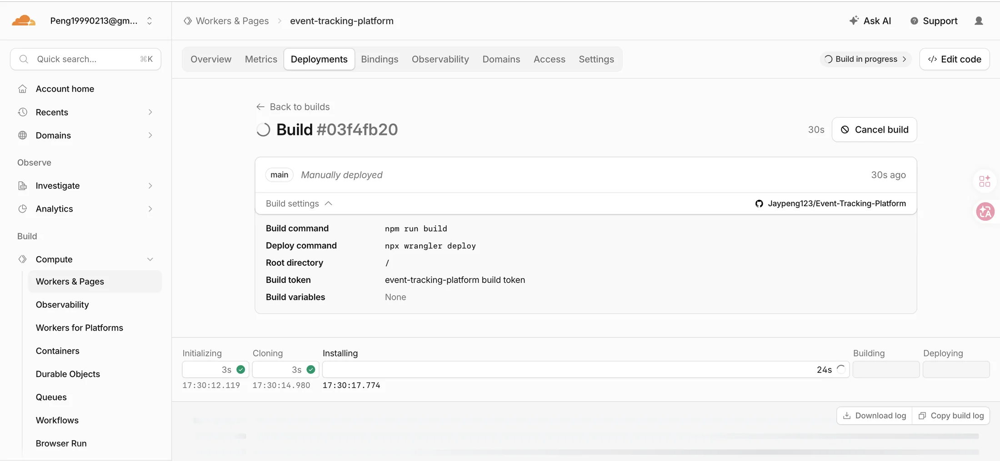
分析大型、複雜的流程時，AI 只產出 8 筆埋點事件，讓我開始檢查整個資料處理流程。
確認平台實際取得哪些 Page、Frame 與畫面內容。
檢查是否因資料量太大，導致部分內容被省略或截短。
比對設計稿中的主要功能，確認是否有重要操作未被分析。
透過實際操作與異常情境，找出 AI 開發時沒有考慮完整的細節。
沒有建立專案、沒有連結 Figma 時，使用者知道下一步要做什麼嗎？
更換 Figma Page 後，舊的分析結果是否正確清除或更新？
Figma 授權失敗、AI 分析失敗時，是否提供明確的原因與操作方式？
修改埋點內容後，是否能正確保留並匯出 Excel？
從只關注介面與操作流程，到開始理解資料、授權、部署與系統限制。
理解 Figma 資料如何被讀取、整理，再交給 AI 分析，而不只是看到最後的埋點結果。
理解 PAT 與 OAuth 的差異，以及授權成功不代表 API 就能無限制使用。
理解 GitHub、Cloudflare 各自的角色，以及程式完成和網站正式上線是兩件事。
理解重複讀取資料會消耗額度，也開始考慮資料更新、保存與失效的問題。